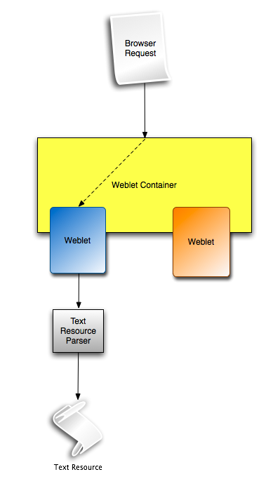

Not only java or jsp files have the problem of having to load resources. Resource loading is universal and not only limited to the domain of java or its derived technologies.
Resources can be loaded also by resource files. Weblets
as universal solution to resource loading provides the hooks for CSS and javascript for authors who have to deal with the problem of having to load or reference resources in a neutral way.
The Weblets APIs follow the general patterns as described in Weblets Users Guide: Introduction to the API Patterns . for further information please follow the link.
To support resource cross referencing in a neutral manner, Weblets
adds another parsing step to generic text resources which pre-parses the resource for the occurrence of the contractual functions and then replaces them on the fly with the weblet url calls.
The browser, after the parsing step, can resolve the urls and can trigger the second weblet stage which serves the resources!
Image 0: Resource Parsing in Weblets
Now to apply this we have to have in mind that every javascript file loaded by Weblets is parsed and searched for our weblet notation. Hence we can use api functions directly without influencing the actual code.
Code 0: Javascript Usage of the weblet api
alert('weblet:url( "weblets.demo" , "/welcome.js" )');
expands to alert('/myapp/weblets/demo/welcome.js')
alert("weblet:resource( 'weblets.demo' , '/welcome.js' )");
expands to alert("/weblets/demo/welcome.js")
Note: To ease the integration into various text based resource languages, the hyphenation normally found for strings was deliberately left out of the function definition!
Everything said regarding javascript also applies to CSS, following code example will showcase the features Weblets adds to CSS
Code 1: CSS Usage of the weblet api
background-image: url( weblet:resource( "weblets.demo" , "/myimage.png" ) );
will be expanded to
background-image: url( /myapp/weblets/demo/myimage.png );
Basically every text resource is parsed in the parsing stage. You can use the Weblets notation in everything text based! The referencing of relative resources in Weblets as well is no problem, you still can reference resources relatively without any limitations, however you have to have in mind, that those resources are referenced relatively to the expanded weblet url. Generally spoken it is saver to simply use the weblet notation for intra weblet resource references!
Weblets resources can cross reference each other, a weblet function parser supports the direct referencing of resources via the weblet notation, out of every weblet loaded resource file.